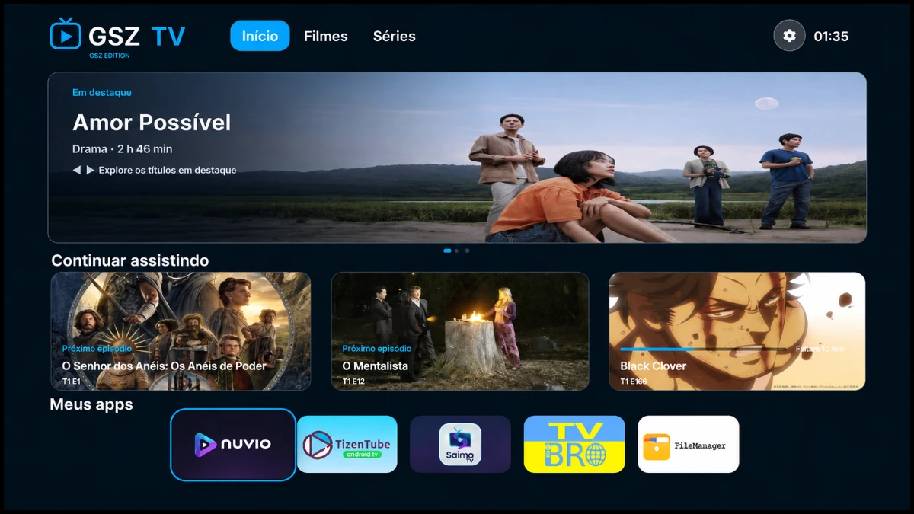

— launcher grátis para Android TV, Google TV e projetores AndroidLauncher leve, simples e sem anúncios para Android TV, Google TV e projetores Android. Navegação otimizada para controle remoto e tela inicial personalizável.

O GSZ TV é um launcher gratuito e sem anúncios para Android TV, Google TV e projetores Android. Foi desenvolvido pelo brasileiro Guilherme Vila Verde (@guisz-code) como um projeto independente, para oferecer uma tela inicial leve, personalizável e fácil de usar com o controle remoto.
O launcher foi criado e testado principalmente em um projetor Magcubic HY300 com Android 12. É compatível com aparelhos que usam Android 8.0 ou superior e continua recebendo melhorias e novos recursos.
Design otimizado para telas grandes e navegação com controle remoto.
Launcher simples, sem anúncios e com desempenho focado em Android TV.
Tela inicial e configurações adaptáveis ao seu aparelho.
Verificação de novas versões direto pela página de Releases.
Espaço reservado para as fotos do launcher. Novas imagens serão adicionadas em breve.
Foto do launcher em breve
Foto do launcher em breve
Foto do launcher em breve
Foto do launcher em breve
Baixe o APK oficial direto da página de Releases do repositório.
Baixa o APK da versão mais recente pelo GitHub, sem passar pela página de releases.
Abre o release mais recente em uma nova aba para consultar as novidades e os arquivos disponíveis.
Requer Android 8.0 (API 26) ou superior. Não indicado para celulares ou tablets.
# Instalar via USB
adb install -r GSZTV.apk# Instalar via Wi-Fi
adb connect IP_DA_TV:PORTA
adb install -r GSZTV.apkDúvidas comuns sobre instalação, compatibilidade e atualização do GSZ TV.
Sim. O GSZ TV é gratuito, não tem anúncios nem assinatura, e o código-fonte é aberto sob a licença MIT. O download do APK é feito apenas pela página oficial de Releases do GitHub.
O GSZ TV foi feito para Android TV, Google TV e projetores com Android 8.0 ou superior. Existem também versões experimentais para Smart TVs LG (webOS) e Samsung (Tizen), publicadas em um pré-release e que ainda precisam de validação em TVs reais.
Android 8.0 (API 26) ou superior. O launcher foi criado e testado principalmente em um projetor Magcubic HY300 com Android 12.
Baixe o arquivo GSZTV.apk pela página de Releases, abra o arquivo no aparelho e permita a instalação de aplicativos de fontes desconhecidas. Se preferir, transfira o APK por pendrive, nuvem ou aplicativo de transferência de arquivos. Também é possível instalar pelo computador usando ADB.
Em aparelhos compatíveis, sim: o GSZ TV pode assumir a tela inicial. Para voltar à interface original, basta alterar a opção Início nas configurações do próprio aplicativo.
A partir da versão 1.5, abra Configurações > Atualizações dentro do launcher para verificar, baixar e instalar novas versões. Não desinstale o aplicativo antes de atualizar, para preservar suas configurações.
O Fire TV Stick usa o Fire OS, que é baseado em Android, mas a troca da tela inicial depende das restrições da Amazon. O projeto é desenvolvido e testado para Android TV, Google TV e projetores Android.
Não é o objetivo. A interface é pensada para telas grandes e para navegação com controle remoto, então o uso em celulares e tablets não é indicado.
O código-fonte é público e aberto sob a licença MIT, o que permite auditar o funcionamento do aplicativo. Baixe o APK somente pela página oficial de Releases do repositório GSZ-TV para evitar arquivos modificados.